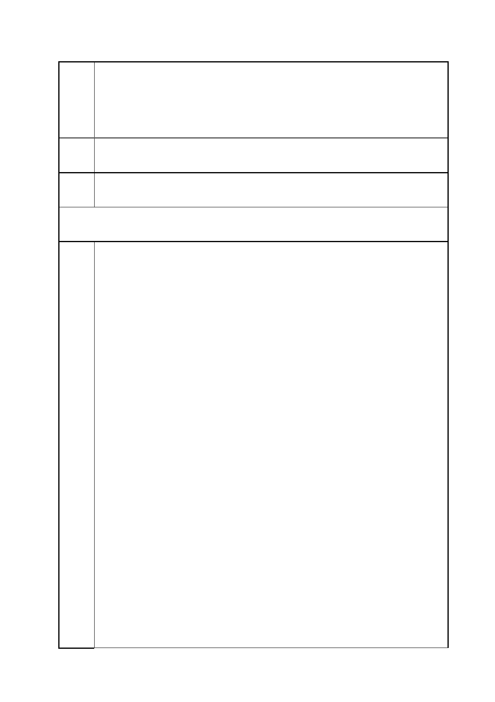

臺北市都市計畫委員會 公民或團體陳情意見綜理表
案
名
法一
「變更臺北市信義區逸仙段二小段 33 地號等 21 筆土地（原臺北機廠）
工業區為創意文化專用區、特定專用區、道路及綠地用地主要計畫案」
及「擬定臺北市信義區逸仙段二小段 33 地號等 21 筆土地（原臺北機
廠）創意文化專用區、特定專用區、道路及綠地用地細部計畫暨劃定
都市更新地區計畫案」
市府 同編號 1 市府回應內容。
回應
103.9.24.第二次陳情(黃○品)
陳情
理由
及建
議辦
法一
全區保存台北機廠！重現動態「火車醫院」！
公民進場參與討論！停止官方閉門議決！
台北機廠文史守護聯盟意見書
【源起】
1935 年建造的台北機廠（台鐵修繕機車之處，素有「火車醫院」之
稱），前身為清朝的台北機器局，其廠區內的機具、建築和動線配置，
是台灣自清末、日本殖民、戰後美援…等現代化過程的重要歷史活載
體，過去台北機廠對外辦理導覽活動時，總是吸引許多市民前來一窺
此罕見的工業地景。
2005 年台北機廠因配合高鐵延伸至南港的國家政策，必須讓出列車
駛入北廠的地下軌道，將維修工程另移他處。而原廠區為配合鐵路局
的「資產活化」的償債計畫，自去年 11 月起，這塊台北市最後的工
業用地，便進入都市計畫審議流程中討論地目變更後的未來用途，過
程中無論是台北市政府辦理的都市計畫公展說明會，或文化部勉為其
難辦理的公聽會，都吸引上百名的民眾到場關心、踴躍發言。
來自四面八方的不同團體與市民，場上的發言幾乎指向同一個共識：
我們厭倦徒留古蹟建築，進駐餐廳、商店等與建築物歷史脈絡毫無關
聯的「複合式文創」，使得第一次到華山、松菸的觀光客，僅能從文
字圖說得知華山原來是酒廠、而松菸前身是菸廠；而市民朋友也焦慮
於容積浮濫、遍地高樓的開發導向，不但招商過程經常充滿不透明的
弊端（如大巨蛋），「台北的天空」也可能在天際線的競賽中成為絕響！
因此，針對台北機廠的走向，各界努力提出了各式各樣活潑、有趣的
意見，為的是能保住完整的工業遺址，不再被「徒具空殼的文創園區」
和「剷除式的開發思維」所破壞。無奈寶貴的公民意見在四次的都市
計畫審議委員會中，並未獲得充分重視，面對台北機廠的未來即可能
在本月 25 日的都委會中拍板定案，我們針對歷次討論的不足和疑點
提出下列幾大意見，希望各界能協同支持「全區保存、暫緩決議」的
第 87 頁/共 154 頁